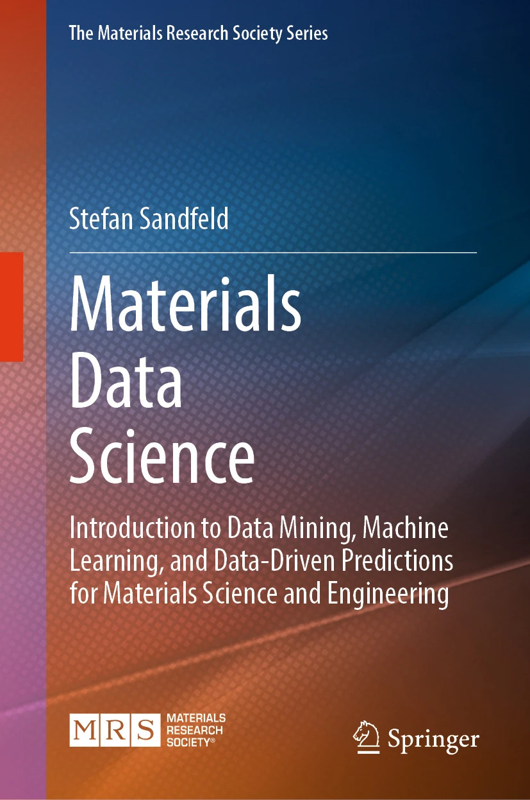
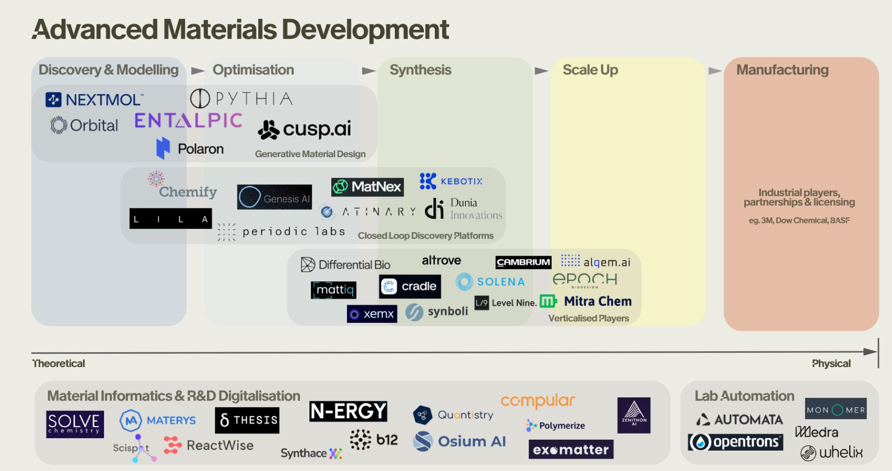
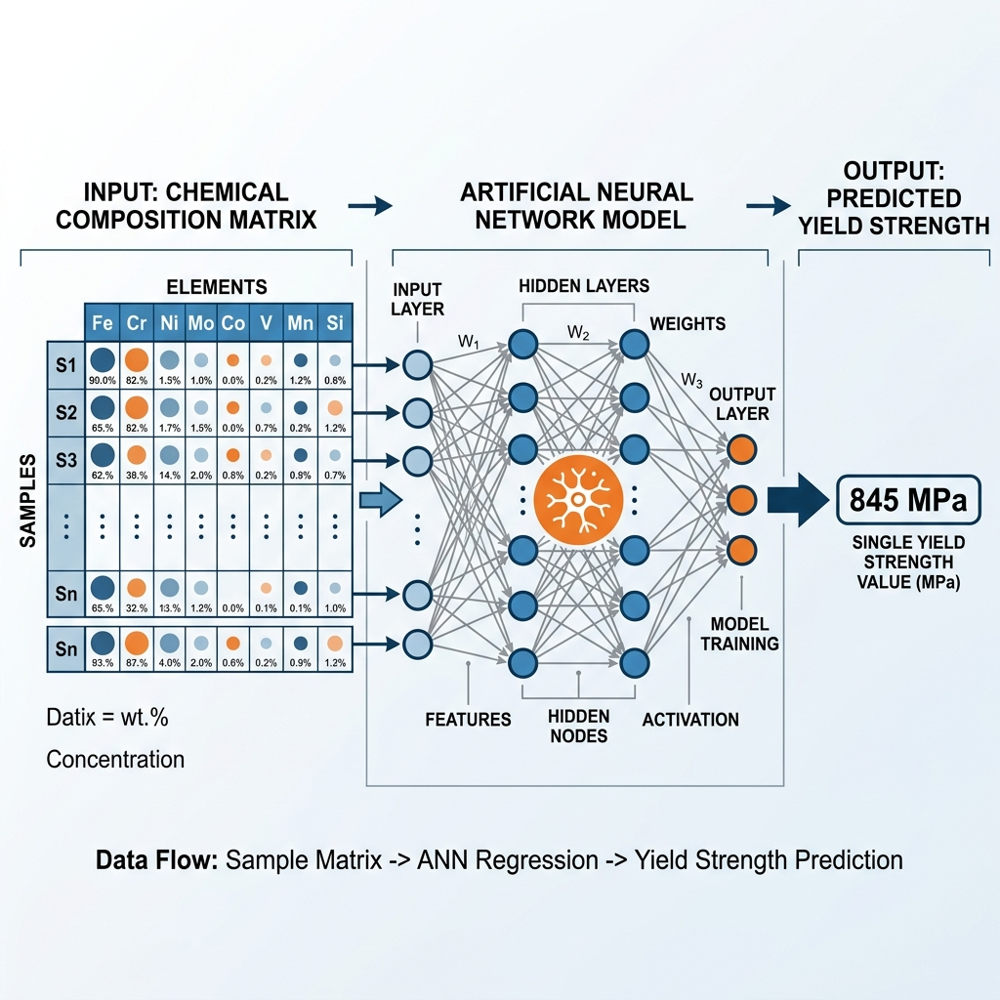
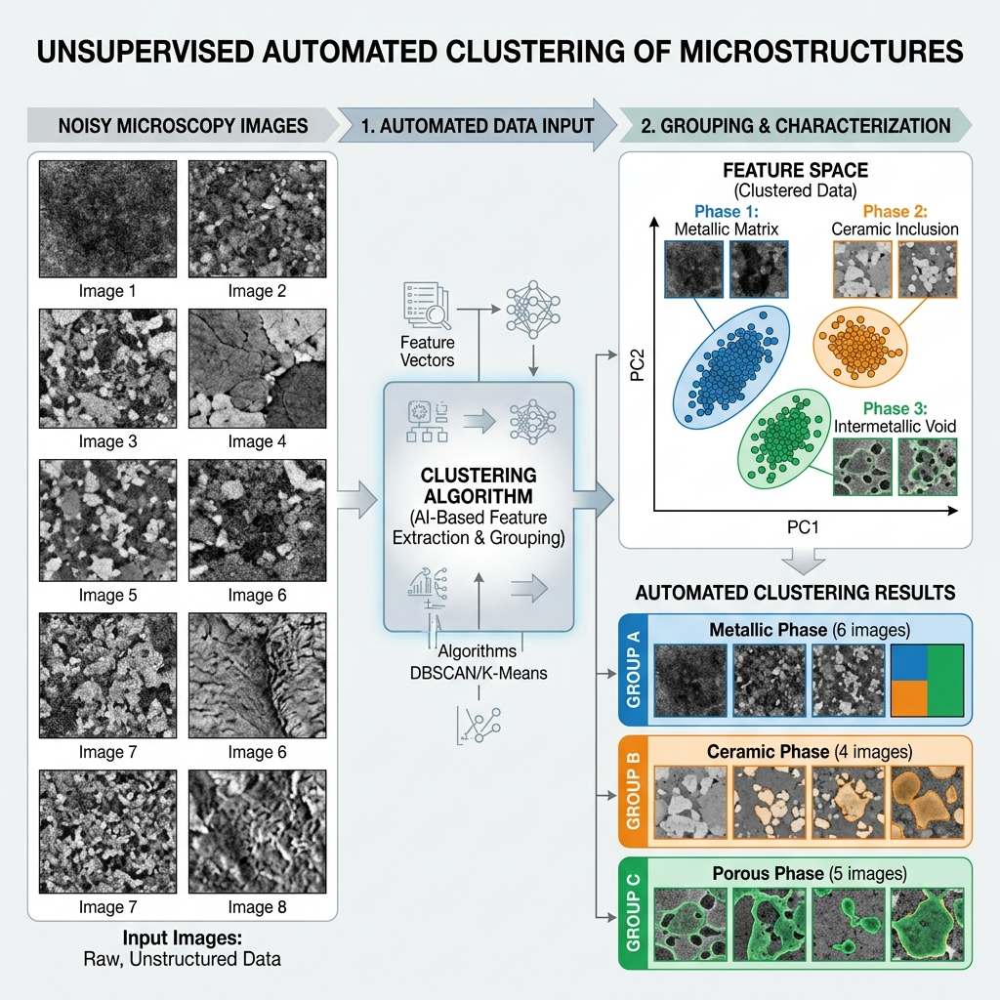
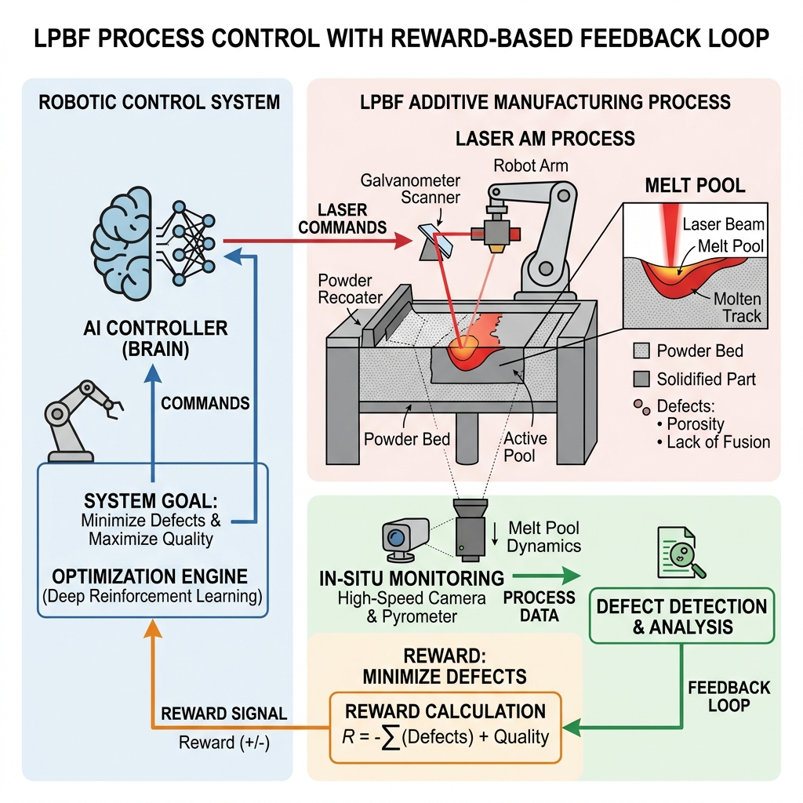
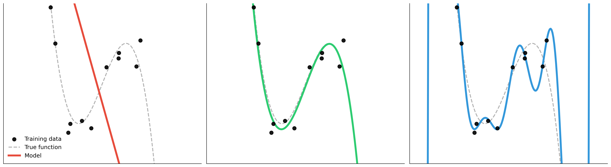
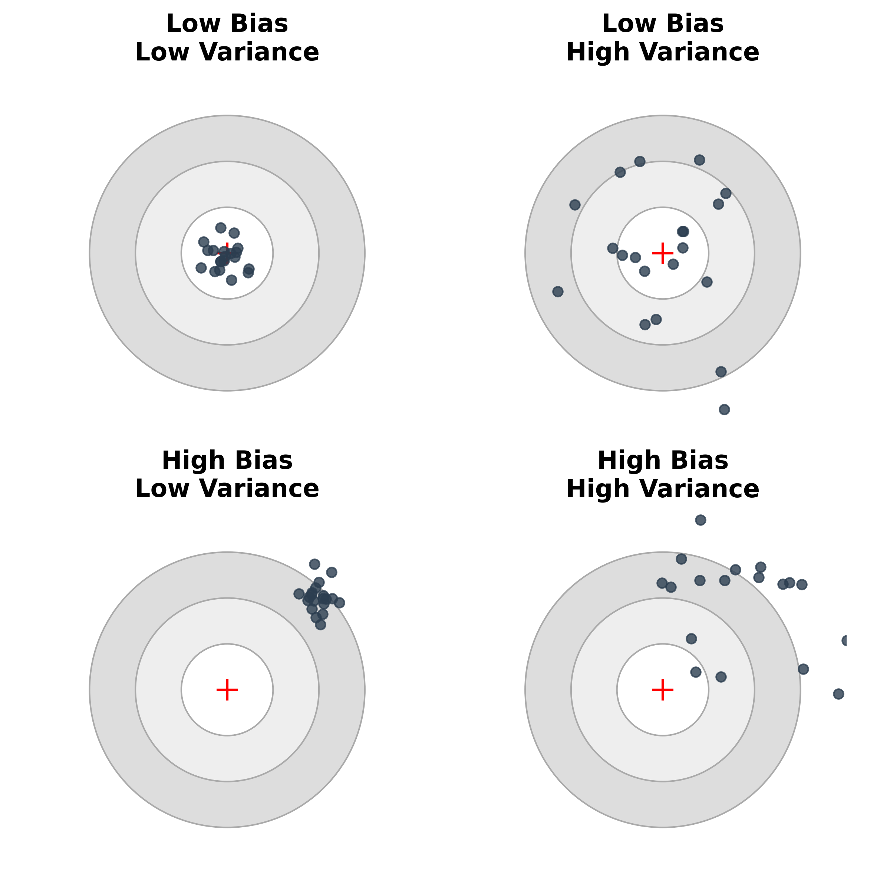
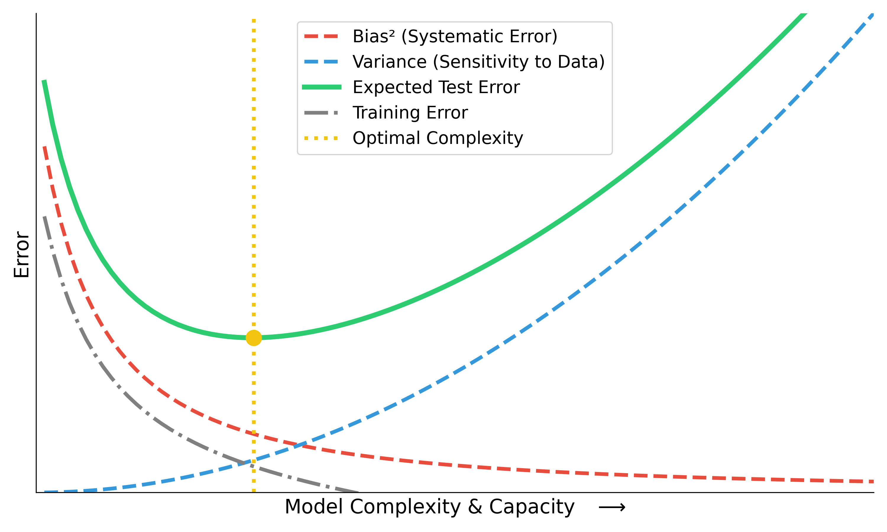
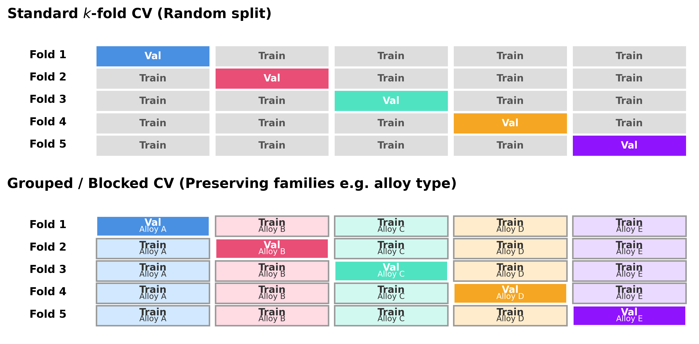

graph LR
Model[Model Type] --> WB[White-box]
Model --> GB[Grey-box]
Model --> BB[Black-box]
WB --- WBdesc[Physics-based]
GB --- GBdesc[Hybrid]
BB --- BBdesc[Data-driven]
Mathematical Foundations of AI & ML
Unit 1: What Learning Means in Engineering and Materials
Prof. Dr. Philipp Pelz
FAU Erlangen-Nürnberg


Title + positioning in SS26 lecture triad
- MFML provides the mathematical backbone for both applied SS26 courses.
- Materials Genomics (MG) and ML for Characterization/Processing (ML-PC) consume this notation directly.
- Goal: shared conceptual language so students can transfer methods across domains.
Why this course now?
- Many students can “run models” but struggle to justify modeling decisions.
- Engineering ML requires validity, uncertainty, and failure analysis, not only accuracy.
- This unit reframes ML from tool usage to principled scientific modeling.
Books for the lecture triad

Advanced Materials Development

Landscape of advanced materials development companies & Startups
Advanced Materials Development - Generative Design
- Orbital Materials: Developing generative AI and “foundation models for atoms” to design new materials for carbon capture and clean energy storage.
- CuspAI: Building an algorithmic materials discovery platform—effectively a “search engine” for exact atomic structures and sustainable materials using generative models.
- Polaron: Accelerating the design of advanced materials by applying generative AI directly to the discovery and optimization of new multi-component systems.
Advanced Materials Development - Closed Loop Discovery Platforms
- Chemify: Digitizing chemistry via “Chemputation,” linking AI-driven molecular design with robotic synthesis.
- Atinary: Powering “Self-Driving Labs” with a no-code AI platform to automate the Design-Make-Test-Learn cycle.
- Kebotix: Integrating AI and robotic lab automation to form a self-driving platform targeting new chemicals and materials.
- Periodic Labs: Deploying frontier AI models as “AI scientists” to autonomously design, execute, and learn from physical experiments.
- MatNex: Combining AI with quantum mechanics algorithms for rapid materials discovery, e.g., rare-earth-free magnets.
- Genesis AI: Building autonomous discovery engines that orchestrate AI agents and robotic hardware.
Advanced Materials Development - Materials Informatics & R&D Digitalization
- N-ERGY: R&D intelligence platform leveraging AI and knowledge graphs to accelerate materials discovery for extreme environments.
- Materys: Cloud-based virtual laboratory automating complex material simulations and data management.
- ReactWise: AI-powered platform for chemical process optimization using Bayesian active learning to accelerate synthesis.
- Polymerize: Materials informatics platform focusing on predicting and optimizing polymer formulations.
- Synthace: Digital experiment platform for lab automation and orchestrating complex R&D experiments.
Learning outcomes for Unit 1
By the end of this lecture, students can:
- formulate supervised learning as a risk-minimization problem,
- explain model/loss/regularization/generalization coherently,
- identify leakage and overconfidence risks in materials workflows,
- separate lecture-core theory from exercise implementation tasks.
What students already know
- Calculus basics, linear algebra, and SVD are assumed.
- Very basic Python is assumed (NumPy-level competency).
- We now reinterpret these prior tools as components of learning systems.
What students often confuse
- AI vs ML vs deep learning vs statistics vs simulation.
- Predictive fit vs scientific explanation.
- High benchmark score vs deployable trustworthy model.
Quick map: AI vs ML vs DL vs Data Science
- AI: broad umbrella for intelligent systems.
- ML: data-driven function estimation inside AI.
- DL: model family inside ML.
- Data science: includes data engineering, diagnostics, domain interpretation, and deployment context (Sandfeld et al. 2024).

Domain knowledge matters
- Materials and engineering constraints reduce the hypothesis space.
- Physically impossible predictions are still wrong even if numerically low-loss.
- Domain priors improve data efficiency and robustness.
Example — Alloy yield strength: A neural net trained on composition → yield-strength data predicts \(\sigma_y < 0\) for a novel alloy. The test MSE is low, but the prediction is physically meaningless (\(\sigma_y \geq 0\)). Encoding this constraint (e.g. softplus output) eliminates impossible predictions and reduces the data needed because the model no longer wastes capacity on the infeasible region.
Roadmap of today’s 90 min
- Part A: model concept and epistemology.
- Part B: formal supervised learning core.
- Part C: validation, uncertainty, and trust.
- Part D: transfer to materials tasks and exercise handoff.
What is a model? (Neuer 1.1.1)
- A model is a purposeful abstraction (simplified representation) of reality designed for prediction and explanation (reasoning).
- We distinguish between First-Principle models (bottom-up, based on physical laws) and Data-based models (top-down, extracted from observations).
- Models trade realism for tractability and decision usefulness.
- Good models are evaluated at the decision point, not by aesthetics (Neuer et al. 2024).
First-principles model example
- Example: classical gravitation as a mechanistic model.
- Strengths: interpretability, invariance, extrapolation under assumptions.
- Limits: real systems often violate simplifying assumptions.
Data-based modeling (top-down)
- Assumes relevant structure is represented in measured data.
- Performance depends on data quality, coverage, and split design (Neuer et al. 2024).
When first-principles is insufficient
- Complex process chains can be nonlinear, high-dimensional, and partially observed.
- Closed-form mechanistic models can be unavailable or too expensive.
- Hybrid strategies (physics + data) are often the engineering sweet spot.
Example — Melt-pool dynamics in additive manufacturing: We can formulate the partial differential equations (PDEs) for laser-melting metal powder, but simulating them for a whole part is computationally too expensive for real-time control. Internal defects are also physically “partially observed.” A hybrid strategy trains an ML model on high-fidelity simulations and sensor data to predict defects in real-time, bypassing the computational bottleneck of pure physics while retaining physical validity (Meng et al. 2020).
White-box / grey-box / black-box
- White-box: explicit mechanism and interpretable parameters (e.g., physical laws, linear regression).
- Black-box: non-traceable internal mechanisms (e.g., deep neural networks), high predictive flexibility.
- Grey-box: partially traceable, blends mechanistic structure with learned components (e.g., PINNs) (Neuer et al. 2024).
- Note: Explainability techniques aim to move black-box models toward the grey-box category.
Example — Grey-box: crystal-plasticity with a learned hardening law: In crystal-plasticity finite-element modeling (CPFEM) the kinematics (deformation gradient decomposition \(\mathbf{F} = \mathbf{F}^e \mathbf{F}^p\), slip-system geometry) are well understood and kept as white-box components. The strain-hardening law \(\dot{\tau}_c = h(\gamma, \dot{\gamma}, T)\), however, encodes complex dislocation interactions that are expensive to derive from first principles. A grey-box strategy replaces only this hardening function with a small neural network trained on experimental stress–strain curves, while the surrounding finite-element equilibrium and crystallographic slip rules remain physics-based. The result: physically consistent deformation fields and accurate hardening behavior without a full empirical constitutive model (Neuer et al. 2024).
Why black-box criticism appears
- Safety, traceability, and auditability requirements in engineering settings.
- Difficulty diagnosing failure causes without behavioral probes.
- High-stakes contexts demand calibrated confidence and explainability.
Example — Automated weld inspection: A deep CNN classifies radiographic weld images as accept / reject with 97 % accuracy. When a batch of welds is rejected, the production engineer asks: “Is the defect porosity, lack of fusion, or a crack?” The model cannot answer — it was trained end-to-end on a binary label. Without an interpretable intermediate representation, the team must repeat expensive manual inspection to identify the root cause, negating the deployment benefit.
{kind=link}
Explainability as spectrum, not binary
- Global explainability: model-level behavior patterns.
- Local explainability: case-level attribution/sensitivity.
- Explainability quality must be judged against stakeholder questions.
Example — Fatigue-life prediction with SHAP analysis: A gradient-boosted tree predicts fatigue life \(N_f\) of welded joints from geometry, load ratio, and material grade. Global explainability (SHAP summary plot) reveals that stress range \(\Delta\sigma\) and weld-toe radius \(r\) dominate predictions across the dataset — confirming known fracture-mechanics drivers. Local explainability (SHAP waterfall for a single joint) shows that for one anomalous prediction the model relied heavily on an unusual surface-roughness value, flagging a possible measurement error. The same model, two explainability scopes, two different actionable insights.
Hybrid modeling mindset
- Put trusted physics where available.
- Learn residuals or unknown couplings from data.
- Keep interfaces explicit so assumptions are inspectable and testable.
Example — Thermal-barrier coating lifetime: A turbine-blade thermal-barrier coating (TBC) degrades through oxide-layer growth and thermal cycling. The oxidation kinetics follow a well-known parabolic rate law \(h_{\text{ox}} \propto \sqrt{t}\) (trusted physics). However, the spallation failure also depends on interface roughness, coating microstructure, and thermal-cycle profile — couplings that are poorly modelled analytically.
Hybrid strategy:
- Physics module: parabolic oxidation model computes oxide thickness \(h_{\text{ox}}(t, T)\).
- ML module: a small network takes \(h_{\text{ox}}\), cycle count, roughness, and porosity as inputs and predicts remaining useful life (RUL).
- Explicit interface: the physics module outputs \(h_{\text{ox}}\) in μm; the ML module ingests it as a feature alongside microstructural descriptors. If the oxidation model is updated (e.g., different alloy), only the physics module changes; the ML module is retrained on new residuals.
This is exactly the pattern: trusted physics → learned residual → explicit interface.
Mini-checkpoint question
- Is linear regression always “white-box” in practice?
- What if features are heavily engineered or leakage-contaminated?
- Discussion target: transparency depends on entire pipeline, not formula alone.
Types of learning
Supervised Learning
Learning with labeled data. Includes regression (continuous targets) and classification (discrete categories).
Example: Predicting alloy yield strength from chemical composition [Bhandari et al., 2020].

Unsupervised Learning
Finding hidden structure in unlabeled data (clustering, dimensionality reduction, embeddings).
Example: Clustering unlabelled microscopy images to discover distinct phases [Stender et al., 4D-STEM phase mapping].

Reinforcement Learning
Learning optimal actions through trial and error to maximize a reward signal.
Example: An autonomous agent controlling a laser-melting process to minimize defects [Wang et al., 2021].

Data notation and task notation
- Dataset: \(\mathcal{D} = \{(\mathbf{x}_i, y_i)\}_{i=1}^N\)
- Hypothesis class: \(f_\theta: \mathcal{X} \to \mathcal{Y}\)
- Objective: choose \(\theta\) minimizing risk under deployment-relevant assumptions.
Empirical risk minimization (ERM)
- Core training objective:
\[ \hat{\theta} = \arg\min_\theta \frac{1}{N}\sum_{i=1}^{N}\ell\big(f_\theta(\mathbf{x}_i), y_i\big) \]
- ERM fits observed data, not future distribution automatically.
Regularized objective and Parsimony
- Parsimony and Occam’s Razor: The preference for simpler models to avoid fitting noise (overfitting).
- Regularization: A technique to control complexity by adding a penalty term (e.g., Ridge/Lasso) to the loss function, discouraging large parameter values and wild oscillations.
\[ \hat{\theta} = \arg\min_\theta \frac{1}{N}\sum_{i=1}^{N}\ell\big(f_\theta(\mathbf{x}_i), y_i\big) + \lambda\Omega(\theta) \]
- \(\lambda\) controls fit–complexity tradeoff.
Population risk vs empirical risk
Empirical Risk
- Optimized on \(\mathcal{D}_{train}\)
- Proxy for performance
- Can be driven to zero (overfit)
Population Risk
- Expected error on \(\mathcal{P}\)
- True performance goal
- Requires generalization
- Generalization gap: \(R_{\text{test}} - R_{\text{train}}\).
- Generalization: The central goal of ML—ensuring the model performs well on unseen test data, not just the training set.
- This is the central bridge from statistics to real engineering decisions (Murphy 2012; Bishop 2006).
Regression vs classification vs ranking
- Regression: continuous target estimation.
- Classification: class-probability estimation.
- Ranking: relative ordering for screening/prioritization workflows.
Learning as optimization
- ML minimizes a loss function \(\mathcal{L}(\theta)\) measuring the discrepancy between predictions and true targets.
- Different tasks require different penalties (e.g. robust to outliers vs penalizing large errors).
Regression: MSE (L2 Error)
\[\text{MSE} = \frac{1}{N}\sum_{i=1}^{N} (y_i - \hat{y}_i)^2\]
- Mean Squared Error: The standard loss for regression.
- Intuition: Penalizes large errors disproportionately (quadratic).
- Geometric interpretation: Minimizing the sum of squared residuals.
Regression: MAE (L1 Error)
\[\text{MAE} = \frac{1}{N}\sum_{i=1}^{N} |y_i - \hat{y}_i|\]
- Mean Absolute Error: Evaluates errors linearly.
- Intuition: “On average, our prediction is off by X units.”
- Robustness: Less sensitive to outliers than MSE, picking the median rather than the mean.
- Less smooth for optimization since the gradient is undefined at zero.
Classification: 0-1 Loss
\[L_{0-1} = \begin{cases} 0 & \text{if } \hat{y} = y \\ 1 & \text{if } \hat{y} \neq y \end{cases}\]
- Intuition: The absolute simplest classification metric. You are either right (0 penalty) or wrong (1 penalty).
- In practice: This is “Accuracy”. Connects directly to human intuition for counting mistakes.
- Problem: It is a step function! The gradient is exactly zero everywhere (except where undefined). We cannot optimize this with gradient descent.
Classification in Materials Science
Example: Identifying Crystal Defects
- Task: Classify a defect from a microscopy image as a Vacancy, Dislocation, or Precipitate.
- Problem with Regression: Categories have no natural ordering. A “Vacancy” is not numerically “less” than a “Precipitate”.
The Solution: One-hot Encoding
Represent labels as vectors where the correct category is \(1\) and others are \(0\): - Vacancy = \([1, 0, 0]^T\) - Dislocation = \([0, 1, 0]^T\) - Precipitate = \([0, 0, 1]^T\)
The Softmax Function
Our model outputs a raw score (logit) \(o_i\) for each class. But these can be negative and don’t sum to 1! How do we convert them to probabilities \(\hat{y}\)?
Softmax “Squishes” Scores into Probabilities
\[\hat{y}_i = \frac{\exp(o_i)}{\sum_{j} \exp(o_j)}\]
- Non-negative: Exponentiation ensures all probabilities are \(>0\).
- Sums to 1: Dividing by the sum guarantees a valid probability distribution.
- Physics Intuition: This is mathematically identical to the Boltzmann distribution in statistical thermodynamics, where the prevalence of an energy state is proportional to \(\exp(-E/kT)\)!
Classification: Cross-entropy Loss
Now that we have probability predictions \(\hat{y}\), how do we penalize bad ones? \[L = -\sum_{c=1}^{C} y_c \log(\hat{y}_c)\] Since \(y\) is one-hot, this simplifies to \(-\log(\hat{y}_{\text{true}})\).
Why Cross-entropy?
- Information Theory (Surprisal): If the image is a Vacancy (\(y_1=1\)), but our model assigns it 1% probability (\(\hat{y}_1=0.01\)), our “surprise” (\(-\log 0.01\)) is massive!
- Perfect Gradients: The derivative with respect to the raw score \(o_i\) simplifies beautifully to exactly \((\hat{y}_i - y_i)\). The gradient is simply the difference between our prediction and reality!
Optimization lens
- Learning is numerical optimization in parameter space.
- Convergence behavior depends on curvature, scaling, and initialization.
- “Model failure” is often an optimization-pathology issue.
- Example: Training a neural network to model an interatomic potential. If the optimizer gets stuck in a poor “local minimum”, the model might predict completely unphysical behaviors (e.g., solid melting at room temperature), despite having mathematically “converged”.
Bayesian lens (intro)
- Bayesian update:
\[ p(\theta\mid\mathcal{D}) \propto p(\mathcal{D}\mid\theta)\,p(\theta) \]
- Output is a distribution over parameters/predictions, not just a point estimate.
- Example: Predicting the fatigue life of an aircraft component. Instead of outputting a single point estimate (“fails at 10,000 cycles”), Bayesian methods output a probability distribution, allowing engineers to establish a safe lower bound (e.g., 99% confidence life exceeds 8,000 cycles).
Frequentist vs Bayesian workflow (practical)
- Frequentist practice often emphasizes point estimates + confidence intervals.
- Bayesian practice emphasizes posterior predictive uncertainty.
- Engineering choice depends on risk tolerance, compute budget, and interpretability needs.
Decision layer separate from inference
- Inference estimates what is likely.
- Decision-making selects actions under cost/utility constraints.
- Good predictions with wrong decision threshold can still be operationally bad.
No-free-lunch intuition
- No algorithm dominates over all data-generating processes.
- Every model encodes inductive bias.
- Model choice should reflect domain structure and failure costs (Murphy 2012).
Curse of dimensionality (conceptual)
- Data requirement grows rapidly with feature dimension.
- Sparse high-dimensional regimes invite overfitting.
- Structure assumptions, priors, and representations are mandatory.
Recap: 6 equations/ideas to remember
- ERM and regularized ERM.
- Population risk vs empirical risk.
- Bayesian update and posterior predictive view.
- Generalization gap and why train error is insufficient.
- Inductive bias and no-free-lunch perspective.
- Decision layer must align with uncertainty + cost.
Overfitting explained visually
Underfit
- High bias
- Misses structure
Well-fit
- Captures stable signal
- Controlled complexity
Overfit
- Memorizes quirks/noise
- Weak transfer

Bias–variance decomposition (Intuition)
- Truth (Bullseye): The true underlying physical mechanism.
- Darts (Predictions): Where our model lands when trained on slightly different batches of data.
- Bias: The systematic offset from the truth. (Model is fundamentally too structurally simple or constrained).
- Variance: The scatter of the darts. (Model is hypersensitive to the exact noise in the training set).

The Bias-Variance Tradeoff Curve

Total Expected Error = \(\text{Bias}^2\) + \(\text{Variance}\) + \(\text{Noise}\)
- Increasing model capacity drives down training error continuously.
- But expected deployment error forms a U-shape.
- Finding the sweet spot (yellow line) is the central pursuit of ML.
Navigating the tradeoff in Engineering
How do we turn the dials to hit the sweet spot?
To reduce Bias (move right \(\rightarrow\))
- Increase model capacity (e.g., deeper network, higher polynomial).
- Relax physical constraints that are too strict.
- Engineer richer, non-linear features.
To reduce Variance (move left \(\leftarrow\))
- Apply Regularization (mathematical penalty on complexity).
- Introduce Physics Priors (domain-knowledge constraints).
- Gather vastly more training data.
- Enforce simpler architectures.
Note for Engineers: Adding a hard physical equation as a constraint explicitly increases Bias to drastically kill Variance in small-data regimes, making it deployable!
Train/val/test splits
flowchart LR
Data[(Full Dataset)] --> Train[Training Set]
Data --> Val[Validation Set]
Data --> Test[Test Set]
Train --->|Fit parameters| Model((Model))
Val --->|Tune hyperparameters| Model
Model -.->|Iterative tuning| Val
Model ===>|One-shot evaluation| Test
style Train fill:#d4edda,stroke:#28a745,color:#155724,stroke-width:2px
style Val fill:#fff3cd,stroke:#ffc107,color:#856404,stroke-width:2px
style Test fill:#f8d7da,stroke:#dc3545,color:#721c24,stroke-width:2px,stroke-dasharray: 5 5
style Model fill:#cce5ff,stroke:#004085,color:#004085,stroke-width:2px
style Data fill:#e2e3e5,stroke:#383d41,color:#383d41,stroke-width:2px
- Train: Fit parameters.
- Validation: Tune model/hyperparameters.
- Test: One-shot final estimate.
- Crucial Rule: Never “peek” at the test set during tuning!
Cross-validation
- k-fold CV improves stability under limited data.
- Use grouped/blocked CV when IID assumptions break.
- Random CV can be misleading for correlated materials families (McClarren 2021).

Data leakage taxonomy
- Preprocessing leakage: statistics fit on full dataset.
- Group leakage: related samples split across train/test.
- Temporal leakage: future information in training features.
Metrics linked to decisions
- MAE/RMSE for absolute error behavior.
- Calibration for probability trustworthiness.
- Cost-sensitive metrics when false negatives/positives are asymmetric.
Uncertainty types (engineering interpretation)
Aleatoric Uncertainty
Irreducible Noise 🎲
- Source: Inherent randomness in physical processes or measurement limits.
- Mitigation: Needs better hardware/sensors, or robust design margins.
- Example: The \(\pm 2^\circ\text{C}\) reading fluctuation on a thermocouple during casting.
Epistemic Uncertainty
Reducible Ignorance 📚
- Source: Limited data, knowledge gaps, or missing physics.
- Mitigation: Gather more training data or improve the model’s structural assumptions.
- Example: A model’s blind guesswork when extrapolating fatigue life to a novel alloy composition.
\(\rightarrow\) Key takeaway: Different mitigation actions are required. You cannot “smooth out” epistemic ignorance, nor can you “gather more data” to fix aleatoric noise (Neuer et al. 2024).
Model confidence vs correctness
- High confidence can still be wrong (miscalibration).
- Reliability diagrams and calibration checks are essential.
- Threshold decisions should use calibrated outputs.
Trust checklist for engineering ML
- Data provenance documented?
- Split strategy deployment-realistic?
- Uncertainty quantified and interpreted?
- Failure modes and fallback policy defined?
Checkpoint: Exam-style MCQ
Question: You train a deep neural network to predict the fatigue strength of an alloy. The training MSE is nearly zero, but the test MSE is very high. Adding a physical constraint (e.g., non-negative stiffness) slightly increases training MSE but significantly lowers test MSE. Why?
Answer: B. The domain constraint restricts the model from fitting spurious, physically impossible correlations in the training data.
Materials example: spectra interpretation
Task
- Input \(\mathbf{x}\): X-ray diffraction (XRD) pattern (1D intensity vector).
- Output \(y\): Crystal system (classification) or lattice parameters (regression).
- Prior knowledge: Peak positions are governed by Bragg’s law; intensities by atomic scattering factors.
Modeling approach
- Pure Black-box: CNN directly on the spectrum. Often data-hungry and fooled by background noise/shift.
- Hybrid/Grey-box: Extract physics-informed features (peak positions, integral breadths via profile fitting) and pass them to a simpler ML classifier.
Connecting MFML to Materials Genomics (MG)
- MFML provides the rigorous definition of the hypothesis space \(\mathcal{H}\) and loss \(\mathcal{L}\).
- MG applies this to the discovery of new materials.
- Example: High-throughput screening. MFML explains how the surrogate model fits the data and what uncertainty means. MG shows how to use that surrogate to query large compositional spaces for novel thermodynamics properties.
Connecting MFML to ML-PC
- ML-PC (ML for Characterization and Processing) deals with spatial/temporal data and in-situ monitoring.
- MFML explains the bias-variance tradeoff and cross-validation mechanics.
- Example: Defect detection in additive manufacturing. MFML gives the foundation of classification loss (cross-entropy) and data leakage; ML-PC covers the specialized CNN architectures and real-time processing constraints.
Lecture vs Exercise Content Split
Lecture (Theory & Design)
- Definitions and epistemology (What is learning?)
- Objective functions (ERM, regularized risk)
- Conceptual distinctions (Bias vs Variance)
- Validation logic and trust frameworks
Exercise (Implementation & Doing)
- Writing code (NumPy, PyTorch)
- Debugging loss curves
- Sensitivity analysis
- Setting realistic train/val/test splits without leakage
Exercise setup: NumPy linear regression from scratch
- Build linear regression objective and gradient updates manually.
- Implement train/validation split with strict separation.
- Plot training vs validation loss curves over iterations.
Exercise extension: regularization + split stress test
- Add L2 term and compare under/overfit behavior.
- Repeat with different split strategies (random vs grouped).
- Document when measured “improvement” is actually leakage-driven.
Glossary of Key Terms
- Empirical Risk Minimization (ERM): Finding parameters that minimize loss on the training set.
- Generalization Gap: The difference between training error and test error.
- Data Leakage: Information from outside the training dataset inappropriately influencing the model during training.
- Inductive Bias: The explicitly or implicitly stated assumptions a learning algorithm uses to predict outputs.
- White/Grey/Black Box: Spectrum indicating how much of the model’s internal mechanism is physically interpretable vs purely data-driven.
Exam-aligned summary: 10 must-know statements
- ML is optimization under uncertainty, not magic fitting.
- Train loss is not deployment success.
- Split design is part of the model.
- Leakage invalidates performance claims.
- Metrics must align with decisions.
- Uncertainty must be interpreted by type.
- Inductive bias is unavoidable.
- Domain constraints improve trustworthiness.
- Explainability is contextual, not absolute.
- Reproducibility is a scientific requirement.
References + reading assignment for next unit
- Required reading before Unit 2:
- Neuer: Ch. 1.1 and 1.3
- McClarren: Ch. 1.1 and 1.5
- Optional depth:
- Murphy: Ch. 1.1–1.4
- Bishop: Ch. 1.1 and 1.3
- Next unit: linear algebra geometry for learning (projections, conditioning, SVD/PCA bridge).
Bishop, Christopher M. 2006. Pattern Recognition and Machine Learning. Springer.
McClarren, Ryan G. 2021. Machine Learning for Engineers: Using Data to Solve Problems for Physical Systems. Springer.
Meng, L., B. McWilliams, W. Jarosinski, H. Y. Park, Y. G. Jung, J. Lee, and J. Zhang. 2020. “Machine Learning in Additive Manufacturing: State-of-the-Art and Perspectives.” Additive Manufacturing 36: 101538. https://doi.org/10.1016/j.addma.2020.101538.
Murphy, Kevin P. 2012. Machine Learning: A Probabilistic Perspective. MIT Press.
Neuer, Michael et al. 2024. Machine Learning for Engineers: Introduction to Physics-Informed, Explainable Learning Methods for AI in Engineering Applications. Springer Nature.
Sandfeld, Stefan et al. 2024. Materials Data Science. Springer.

© Philipp Pelz - Mathematical Foundations of AI & ML